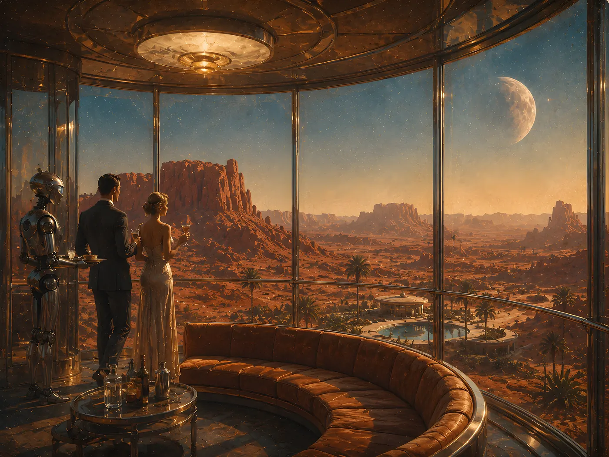
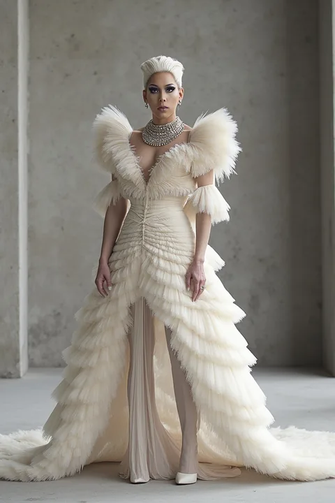
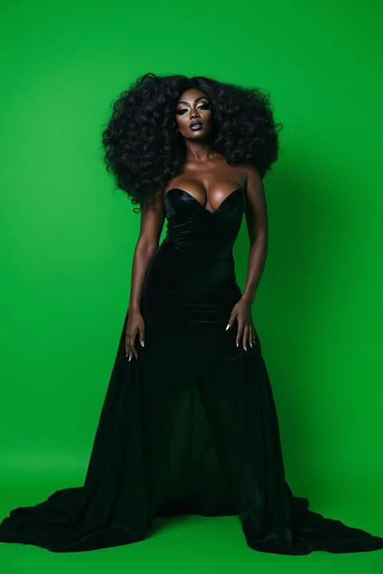
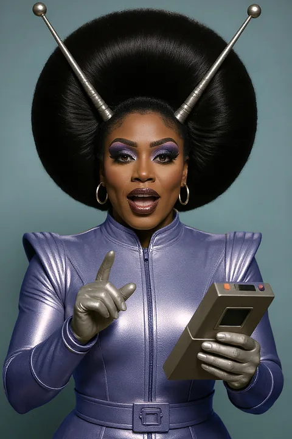
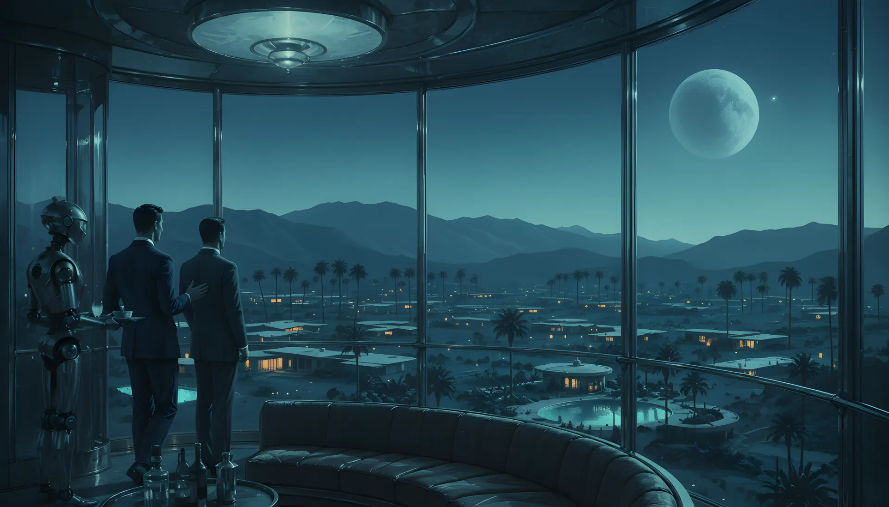
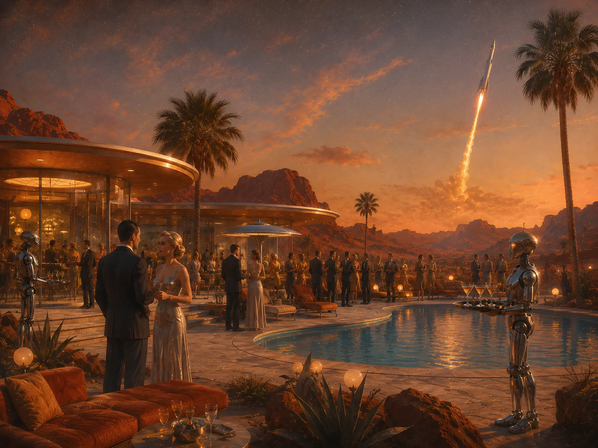

ElevatorBeat · Studio
Tools built like art projects.
We make useful curiosities — software given the care, authorship and appetite usually reserved for creative work.
The studio
Every project starts with something we couldn’t stop looking at.
A fascination, a frustration, a thing that ought to exist. What follows is never a longer feature list — it is the work of making one idea unusually complete.
We design, build, draw and ship everything ourselves from Portland, Oregon. That is why the collection grows slowly, and why each piece in it looks like somebody decided how it should look.

The lounge · Level four
This is where the arguing happens.
Ideas get proposed here, taken apart here, and occasionally survive. The ones that do become the work below.
Dragify
Dragify is a love letter to drag, and the collection is the work. Five packs, ninety-odd looks, every one of them conceived, styled, lit and named by hand — couture on raw concrete, gin-soaked glamour, neon at 2am, and a whole squadron of space queens.
You bring one photograph. The app puts you inside the look you choose, and gives it back to you at full resolution with your face still yours.
- Canonical QueensIconic looks that always cook
- Euphoria // UVElectric love and molly magnificence
- AfterglowA black tie affair
- Haute HausIntercontinental couture
- Ground ControlRetro-futurist space drag

Haute Haus
Afterglow
Euphoria // UV

Canonical Queens

Haute Haus

Afterglow

Ground Control

Euphoria // UV

Haute Haus

Canonical Queens

Afterglow

Euphoria // UV

Haute Haus
Afterglow

Ground Control
One photograph in.
Everything above began as somebody’s selfie. Dragify reads the face, keeps what makes it recognisable, and rebuilds the rest of the frame in the language of the collection you picked — the hair, the makeup, the fabric, the room and the light.

The groundsForty minutes from anywhere, which is rather the point.

Morning
Some work needs the light to be honest.
StraightPic
Point a phone up at a building and the building leans away from you. It is the lens being honest about where you stood, and it is the single most common reason a good architectural photograph never gets posted.
Draw along the lines that ought to be straight. StraightPic corrects the perspective, reframes the picture, and removes the empty wedges the correction leaves behind — without touching anything that made the photograph worth taking.
 Before
Before
 After
After

The observation level
Two rooms are occupied. The rest are for whatever we notice next.
The collection is meant to grow slowly and unevenly — a tool, an experiment, an object nobody asked for. If you have found something worth being curious about, we would like to hear about it.
Come by
There is usually something happening here.
New work, early builds, and the occasional evening on the terrace. Write to us, or take a look at what is already open.
